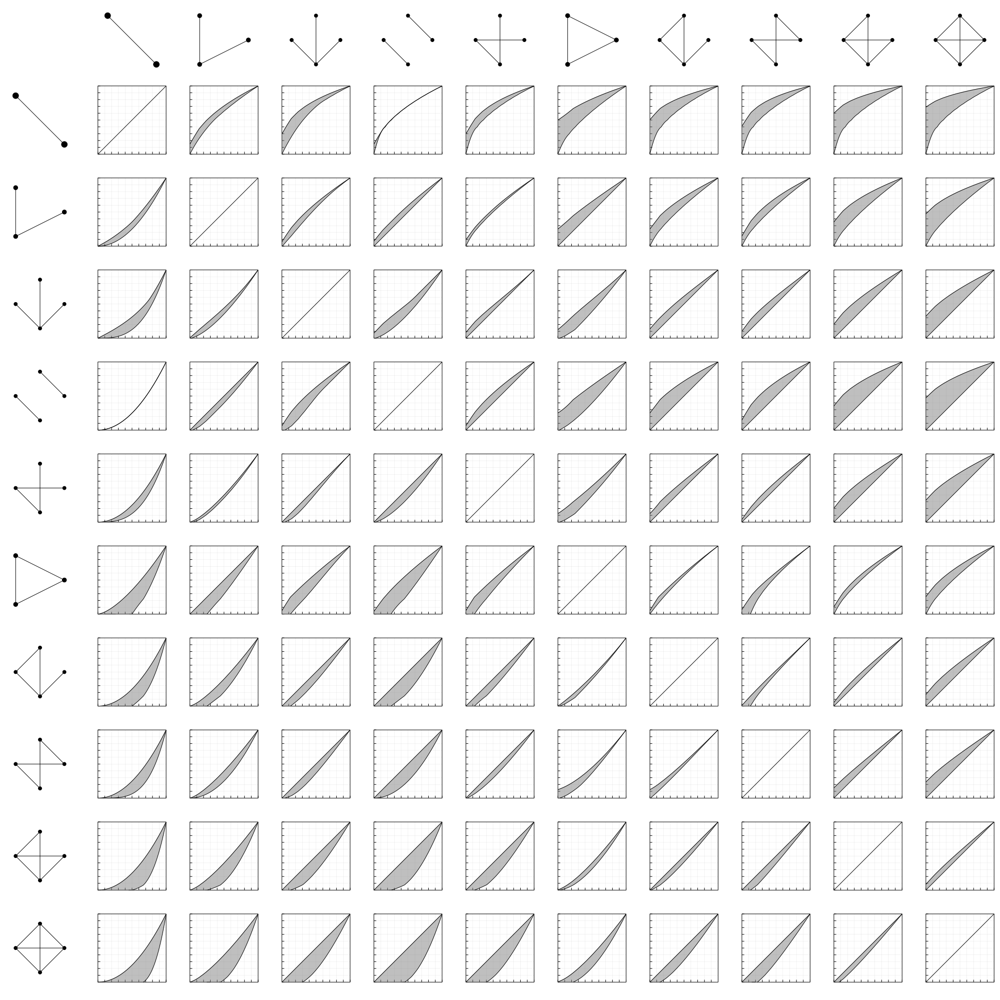

<!DOCTYPE html>
<html lang="en">
  <head>
    <meta charset="utf-8" />
    <meta name="viewport" content="width=device-width, initial-scale=1.0, maximum-scale=1.0, user-scalable=no" />

    <title>Symmetry reduced Flag-hierarchies</title>
    <link rel="shortcut icon" href="./favicon.ico" />
    <link rel="stylesheet" href="./dist/reset.css" />
    <link rel="stylesheet" href="./dist/reveal.css" />
    <link rel="stylesheet" href="./dist/theme/night.css" id="theme" />
    <link rel="stylesheet" href="./css/highlight/zenburn.css" />


  </head>
  <body>
    <div class="reveal">
      <div class="slides"><section  data-markdown><script type="text/template">
$$\require{color}$$
<!-- reveal-md slides.md -w --theme night -->
<!-- reveal-md slides.md --theme night --static _site -->
<!-- Then copy videos! -->
<!-- and remove _asset paths -->
## The Symmetries of Flag-Algebras

<br/>

### Daniel Brosch
#### Tilburg University

<br/>
April 12, 2022
</script></section><section ><section data-markdown><script type="text/template">

## Flag-Algebras


</script></section><section data-markdown><script type="text/template">
### Flag-Algebras

<span class="r-stack">
<span class="fragment fade-out" data-fragment-index="1">

Flag-Algebras were first introduced by **Alexander Razborov** in 2007, and remain one of the most powerful tools in <span style="color:orange">extremal combinatorics</span>. 

</span>
<span class="fragment fade-in" data-fragment-index="1">

They have been used to investigate to <span style="color:orange">dense limits</span> of

- graphs, <!-- .element: class="fragment" data-fragment-index="1"-->
- hypergraphs, <!-- .element: class="fragment" data-fragment-index="2"-->
- directed graphs, <!-- .element: class="fragment" data-fragment-index="3"-->
- permutations, <!-- .element: class="fragment" data-fragment-index="4"-->
- point order types, <!-- .element: class="fragment" data-fragment-index="5"-->
- and much more! <!-- .element: class="fragment" data-fragment-index="6"-->

<span> In this talk, we will focus on the case of <span style="color:orange">graphs</span>.</span> <!-- .element: class="fragment" data-fragment-index="7"-->

</span>
</span>


<aside class="notes"><p>Razborov unifies and generalizes ideas of many authors.</p>
</aside></script></section><section data-markdown><script type="text/template">
### How many edges can there be in a triangle free graph?

<video class="fv-video" src="./videos/TriangleFree.mp4" fv-playback-info="./videos/TriangleFree.json">
</video>
</script></section><section data-markdown><script type="text/template">
### Triangle free graphs

<div class="r-stack">
<div class="fragment fade-out" data-fragment-index="2">

To formally define the optimization problem, we let

$${\color{orange}\mathcal{G}} = ({\color{orange}G_i})_{i\geq 1}$$

be a <span style="color:orange">sequence of graphs</span>, where each graph $\color{orange}G_i$ has $i$ vertices.

<div class="fragment fade-in" data-fragment-index="1">
<div class="r-frame">
The <span style="color:orange">density</span> of a graph $\color{green}H$ in $\color{orange}\mathcal{G}$ is
$$p({\color{orange}\mathcal{G}}, {\color{green}H}) := \lim_{i\to\infty} \mathbb{P}[{\color{red}\sigma_i}({\color{green}H}) \text{ is a subgraph of }{\color{orange}G_i}],$$
where ${\color{red}\sigma_i}$ is a random permutation in $S_i$.
</div>
</div>
</div>
<div class="fragment fade-in" data-fragment-index="2">

Maximize the <span style="color:orange">edge density</span> in a <span style="color:green">triangle free</span> sequence $\mathcal{G}$ of graphs of increasing size:


We saw that


but how do we find an <span style="color:orange">upper bound</span>?

</div>
</div>

<aside class="notes"><p>Non-induced subgraphs count</p>
</aside></script></section><section data-markdown><script type="text/template">
### Multiplying subgraph densities


<div class="r-stack">
<div class="fragment fade-out" data-fragment-index="2">
If we multiply two subgraph densities, we <span style="color:orange">glue together</span> the graphs:


<div class="fragment fade-in" data-fragment-index="1">
This is because the probability that the two graphs are sent to <span style="color:orange">disjoint</span> sets of vertices <span style="color:orange">converges to $1$ in the limit</span>. 
</div>
</div>
<div class="fragment fade-in-then-out" data-fragment-index="2">
These relationships are <span style="color:orange">independent of $\mathcal{G}$</span>, motivating the notation


where a graph $H$ now stand for the function
$$H:\mathcal{G}\mapsto p(\mathcal{G},H).$$
</div>
<div class="fragment fade-in" data-fragment-index="3">

We can now restrict the randomly chosen permutations $\sigma_i$ to fix (<span style="color:orange">flag</span>) some vertices, and extend the <span style="color:orange">gluing</span> operation to <span style="color:orange">partially labeled graphs (Flags)</span>:


</div>
</div>
</script></section><section data-markdown><script type="text/template">
### Flag Sums-of-Squares

<div class="r-stack">
<div class="fragment fade-out" data-fragment-index="2">

As Flags send graph sequences to *real numbers*, <span style="color:orange">squaring a linear combination of Flags</span> results in a function that sends graph sequences to a <span style="color:orange">nonnegative number</span>:


<span class="fragment fade-in" data-fragment-index="1">A linear combination of Flags is also called a <span style="color:orange">Quantum-Flag</span>.</span>
</div>
<div class="fragment fade-in-then-out" data-fragment-index="2">
We can <span style="color:orange">average</span> Flags over all choices of labels, <span style="color:orange">unlabeling</span> them:


<aside class="notes"><p>Averaging preserves nonnegativity.</p>
</div>

<div class="fragment fade-in" data-fragment-index="3">

<p>We can now find an <span style="color:orange">upper bound</span> for the edge density in triangle free graphs:</p>
<p></p>
<div class="fragment fade-in" data-fragment-index="4">

<p>As for <span style="color:orange">polynomial optimization</span>, we can model Flag-SOS using <span style="color:orange">semidefinite programming</span>.</p>
</div>
</div>
</div></aside></script></section></section><section  data-markdown><script type="text/template">
### Flags as (limits of) polynomials

<div class="r-stack">
<div class="fragment fade-out" data-fragment-index="2">

Recently, **Raymond**, **Saunderson**, **Singh** and **Thomas** have proven a fascinating connection of <span style="color:orange">Flag-SOS</span> and <span style="color:orange">polynomial SOS</span>: 

<br/>

- Flags can be seen as limits of sequences of polynomials.
- <span style="color:orange">Partially</span> exploiting the polynomials' symmetries and taking the limit leads to Flag-SOS.

<span style="color:orange">We fully exploit their symmetries!</span><!-- .element: class="fragment" data-fragment-index="1"-->
</div>
<div class="fragment fade-in-then-out" data-fragment-index="2">

Maximizing the <span style="color:orange">edge density</span> in a <span style="color:green">triangle</span>-free graph can be reformulated as:

\begin{align}
    \lim_{n\to\infty}\max \enspace&{\color{orange}\frac{1}{\binom n 2}\sum_{1\leq i<j\leq n} x_{ij}}\\\\
    \text{s.t.}\enspace & {\color{green}\frac{1}{\binom{n}{3}}\sum_{1\leq i<j<k\leq n} x_{ij}x_{ik}x_{jk}} = 0,\\\\
    & x_{ij}\in\\{0,1\\} \quad \text{for all } i < j.
\end{align}

</div>
<div class="fragment fade-in" data-fragment-index="3">

We introduce <span style="color:orange">binary</span> variables corresponding to <span style="color:orange">edges</span>:

$$ x_{ij} \in \\{0,1\\} \quad \text{for } i < j. $$

<div class="fragment" data-fragment-index="4">

Subgraph densities are polynomials <span style="color:orange">invariant</span> under $\color{orange}{S_n}$ acting simultanously on the indices:

$${\color{orange}\sigma}(x_{ij}) = x_{{\color{orange}\sigma}(i){\color{orange}\sigma}(j)}.$$

<div class="fragment" data-fragment-index="5" style="color:orange">
We can exploit this symmetry!
</div>

</div>

</div>
</div>

<aside class="notes"><p>Monomials = fully labeled graphs. Action corresponds to permuting labels.</p>
</aside></script></section><section  data-markdown><script type="text/template">
### Main reduction idea:

Formulate the problem as a <span style="color:orange">sequence</span> of highly <span style="color:orange">symmetric</span> polynomial optimization problems

<br/>

<div class="fragment">

<span style="color:orange">Exploit</span> the symmetries for <span style="color:orange">each finite $n$</span>

</div>

<br/>

<div class="fragment">

The resulting hierarchies have block-sizes <span style="color:orange">independent of $n$</span>, we can <span style="color:orange">take the limit!</span>

</div>

</script></section><section  data-markdown><script type="text/template">
## Main contributions

<div class="r-stack">
<div class="fragment fade-out" data-fragment-index="1">

We fully <span style="color:orange">exploit the symmetries</span> of two hierarchies:

- <span style="color:orange">Lasserre</span> hierarchy for Flags with <span style="color:orange">few edges</span>       

- <span style="color:orange">Razborov</span> hierarchy for Flags with <span style="color:orange">few vertices</span>     

</div>

<div class="fragment fade-out" data-fragment-index="5">
<div class="fragment fade-in" data-fragment-index="1">

We lay the groundwork for a few novel ideas:


<span class="fragment" data-fragment-index="2">Extension of Flag-Algebras to <span style="color:orange">degenerate extremal combinatorics</span>.</span>

<div class="fragment" data-fragment-index="3">

A <span style="color:orange">harmonic basis</span> and <span style="color:orange">Fourier decomposition</span> of Flags.

</div>

<div class="fragment" data-fragment-index="4">

A generalization of Razborov's <span style="color:orange">partial derivatives</span> of Flags.

</div>
</div>
</div>
<div class="fragment" data-fragment-index="5">
A Julia software package implementing all hierarchies for <span style="color:orange">arbitrary Flags</span> will be available soon.
</div>


</div>

</script></section><section ><section data-markdown><script type="text/template">
## SDP Symmetry reduction basics

<br />

 <!-- .element: class="r-stretch" -->
</script></section><section data-markdown><script type="text/template">
### Symmetric sums of squares


$S_n$ acts here on the basis ${\color{red}[x]}$ of monomials.

This action <span style="color:orange">permutes the rows and columns</span> of the <span style="color:orange">positive semidefinite matrix $X$</span> in the <span style="color:orange">SOS-term</span>

\begin{align}
{\color{orange}\sigma}({\color{red}[x]}^TX{\color{red}[x]}) &= {\color{orange}\sigma}({\color{red}[x]})^TX{\color{orange}\sigma}({\color{red}[x]})\\\\
&= {\color{red}[x]}^T\left(X_{{\color{orange}\sigma}(m_1),{\color{orange}\sigma}(m_2)}\right)_{m_1,m_2\in {\color{red}[x]}}{\color{red}[x]}\\\\
&= {\color{red}[x]}^T{\color{orange}\sigma}(X){\color{red}[x]}
\end{align}


<span class="fragment fade-in" style="color:orange">If $X$ is positive semidefinite, then ${\color{orange}\sigma}(X)$ is as well!</span>
</script></section><section data-markdown><script type="text/template">

### How do we exploit symmetries?

As the feasible set of an SDP is **convex**, we can **average** feasible solutions:

$$\mathcal{R}(X) = \frac{1}{|{\color{orange}G}|} \sum_{{\color{orange}\sigma}\in {\color{orange}G}}{\color{orange}\sigma}(X)$$


<span class="fragment fade-in" style="color:orange">

$\mathcal{R}(X)$ is again feasible, with the same objective value as $X$!

</span>
</script></section><section data-markdown><script type="text/template">
### Symmetric optimal solutions

<div class="r-stack">

<span class="fragment fade-out" data-fragment-index="1">
If $X^*$ is an optimal solution, then so is $\mathcal{R}(X^*)$. This solution is <span style="color:orange">invariant under actions of ${\color{orange}G}$</span>:
$${\color{orange}\sigma}(\mathcal{R}(X^*)) = \mathcal{R}(X^*). $$
</span>
<span class="fragment fade-in-then-out" data-fragment-index="1">

We can restrict the SDP to optimize only over <span style="color:orange">invariant</span> matrices:
\begin{align}
\inf\enspace&\langle C,X\rangle \\\\
\text{s.t.}\enspace& \langle A_i, X\rangle = b_i\quad \text{for all } i,\\\\
& X\succcurlyeq 0,\\\\
& {\color{orange}\mathcal{R}(X)=X}.\\\\
\end{align}

</span>
<span class="fragment fade-in-then-out" data-fragment-index="2">

In the case of ${\color{orange}G}=D_{10}=C_5\times Z_2$ we can restrict $X$ to have the **pattern**

$$\begin{pmatrix}
{\color{red}A} & {\color{orange}B} & {\color{green}C} & {\color{green}C} & {\color{orange}B}\\\\
{\color{orange}B} & {\color{red}A} & {\color{orange}B} & {\color{green}C} & {\color{green}C}\\\\
{\color{green}C} & {\color{orange}B} & {\color{red}A} & {\color{orange}B} & {\color{green}C}\\\\
{\color{green}C} & {\color{green}C} & {\color{orange}B} & {\color{red}A} & {\color{orange}B} \\\\
{\color{orange}B} & {\color{green}C} & {\color{green}C} & {\color{orange}B} & {\color{red}A}\\\\
\end{pmatrix}$$ 
</span>
</div>
</script></section><section data-markdown><script type="text/template">
### Block-diagonalization
<div class="r-stack">

<span class="fragment fade-out" data-fragment-index="1">

$$\tiny\begin{pmatrix}
{\color{red}A} & {\color{orange}B} & {\color{green}C} & {\color{green}C} & {\color{orange}B}\\\\
{\color{orange}B} & {\color{red}A} & {\color{orange}B} & {\color{green}C} & {\color{green}C}\\\\
{\color{green}C} & {\color{orange}B} & {\color{red}A} & {\color{orange}B} & {\color{green}C}\\\\
{\color{green}C} & {\color{green}C} & {\color{orange}B} & {\color{red}A} & {\color{orange}B} \\\\
{\color{orange}B} & {\color{green}C} & {\color{green}C} & {\color{orange}B} & {\color{red}A}\\\\
\end{pmatrix}
$$

is positive semidefinite if and only if

* ${\color{red}A} + {\color{orange}B} + {\color{green}C} \geq 0$,
* ${\color{red}A} +\frac{\sqrt{5}-1}{4}{\color{orange}B} - \frac{\sqrt{5}+1}{4}{\color{green}C} \geq 0$,
* ${\color{red}A} -\frac{\sqrt{5}+1}{4}{\color{orange}B}+\frac{\sqrt{5}-1}{4}{\color{green}C} \geq 0$.

</span>
<span class="fragment fade-in" data-fragment-index="1">
In general we may still get multiple bigger blocks


but <span style="color:orange">the sum of the block sizes is often significantly lower than $n$!</span>

<span class="fragment fade-in" data-fragment-index="2" style="color:red">
How do we find the block-diagonalization?
</span>

</span>
</div>

<aside class="notes"><p>This linearizes the problem.</p>
</aside></script></section><section data-markdown><script type="text/template">### Irreducible modules

The action of $S_n$ turns $\mathbb{R}[x]$ into an <span style="color:orange">$S_n$-module</span>.

<div class="fragment">
<div class="r-frame">
<span style="color:orange">Maschke's theorem:</span> Every module can be decomposed into <span style="color:orange">irreducible submodules</span>:

$$\mathbb{R}[x]_{\leq d} \simeq {\color{orange}m_1}S^{\lambda_1}\oplus {\color{orange}m_2}S^{\lambda_2}\oplus \ldots \oplus {\color{orange}m_k}S^{\lambda_k}.$$

</div>
</div></script></section><section data-markdown><script type="text/template">
### Symmetry adapted basis

A "<span style="color:orange">nice</span>" basis, which respects the decomposition
$$\mathbb{R}[x]_{\leq d} \simeq {\color{orange}m_1}S^{\lambda_1}\oplus {\color{orange}m_2}S^{\lambda_2}\oplus \ldots \oplus {\color{orange}m_k}S^{\lambda_k},$$

is called **symmetry adapted basis** of $\mathbb{R}[x]_{\leq d}$.

<br/>

"<span style="color:orange">Nice</span>" essentially means that we choose the same basis in each copy of each $S^{\lambda_i}$.
</script></section><section data-markdown><script type="text/template">
### Block-diagonalization

<span class="r-stack">
<span class="fragment fade-out" data-fragment-index="1">

Swapping the basis of the SDP to a symmetry adapted basis **block-diagonalizes** the SDP:


</span>
<span class="fragment fade-in" data-fragment-index="1">
If $\mathbb{R}[x]_{\leq d} \simeq {\color{orange}m_1}S^{\lambda_1}\oplus {\color{orange}m_2}S^{\lambda_2}\oplus \ldots \oplus {\color{orange}m_k}S^{\lambda_k},$

we obtain <span style="color:orange">$k$ different blocks of sizes $\color{orange}m_1, \ldots, m_k$,</span> each appearing with $\dim(S^{\lambda_i})$ identical copies.


</span>
</span>


<aside class="notes"><p>$G$ acts on the index space of $X$. We can delete the copies.</p>
</aside></script></section></section><section ><section data-markdown><script type="text/template">## Representation theory of ${\color{orange}S_n}$


</script></section><section data-markdown><script type="text/template">
### Permutation modules

<span class="r-stack">

<span class="fragment fade-out" data-fragment-index="1">

Let ${\color{orange}\lambda} = (\lambda_1,\ldots, \lambda_m)\in\mathbb{N}^m$ be a **partition** of $n$:

- $\lambda_1 \geq \lambda_2\geq \ldots\geq \lambda_m>0$,
- $\lambda_1+\ldots+\lambda_m = n$.

</span>
<span class="fragment fade-in-then-out" data-fragment-index="1">

A **Young-tableau** of *shape* $\color{orange}\lambda$ consists of $n$ boxes, positioned on $m$ rows, with $\color{orange}\lambda_i$ boxes in row $i$, which are filled bijectively with $\\{1,\ldots,n\\}$.

<br/>


is a Young-tableau of shape $\color{orange}{(3,2)}$.

</span>
<span class="fragment fade-in-then-out" data-fragment-index="2">

A **Young-tabl<ins>oid</ins>** is the *row-equivalence* class of a Young-tableau:


</span>
<span class="fragment fade-in-then-out" data-fragment-index="3">

A **Permutation module** of shape $\color{orange}\lambda$ is the $\color{orange}{S_n}$-module

$$M^{\color{orange}\lambda} := \mathrm{span}_\mathbb{R}\\{ \text{Young-tabloids of shape } {\color{orange}\lambda}\\},$$

where $\color{orange}{S_n}$ acts on the <span style="color:orange">entries</span> of each box individually:


</span>

<span class="fragment fade-in-then-out" data-fragment-index="4">

We know how to <span style="color:orange">decompose</span> Permutation modules into the <span style="color:orange">irreducible</span> Specht-modules.

We can try to first decompose $\mathbb{R}[x]$ into Permutation modules.

</span>

</span>
</script></section></section><section ><section data-markdown><script type="text/template">
## Lasserre style hierarchy
#### Prioritizing Flags with <span style="color:orange">few edges</span>


<!-- 
 -->
</script></section><section data-markdown><script type="text/template">
### The Lasserre hierarchy

<div class="r-stack">
<div class="fragment fade-out" data-fragment-index="2">

The $\color{orange}d$'th level of the <span style="color:orange">Lasserre hierarchy</span> limits the <span style="color:orange">degree</span> of appearing monomials to at most $2{\color{orange}d}$.

<br/>

<div class="fragment" data-fragment-index="1">
We optimize over sums of squares of the form

$${\color{red}[x]}^T X  {\color{red}[x]},$$

where $X\succcurlyeq 0$ and ${\color{red}[x]}$ is a basis of 
$$ \mathbb{R}[x]_{\leq {\color{orange}d}}.$$


</div>

</div>
<div class="fragment fade-in" data-fragment-index="2">

As monomials correspond to <span style="color:orange">fully labeled graphs</span>, we here have

$${\color{red}[x]} = \\{H : H \text{ graph with at most $\color{orange}d$ edges}\\}.$$

</div>
</div>


</script></section><section data-markdown><script type="text/template">
### Reduction strategy

<div class="r-stack">
<div class="fragment fade-out" data-fragment-index="3">
<span>We can <span style="color:orange">block-diagonalize</span> SDPs such as those coming from sums-of-squares.</span>

<span>To do this, we need to <span style="color:orange">decompose $\mathbb{R}[x]_{\leq d}$ into irreducible submodules</span>.</span>  <!-- .element: class="fragment" data-fragment-index="1"-->

<span>The irreducible submodules of $\color{orange}{S_n}$ are the <span style="color:orange">Specht modules $S^\lambda$</span>. </span> <!-- .element: class="fragment" data-fragment-index="2"-->
</div>
<div class="fragment fade-in" data-fragment-index="3">

We need to find a basis of the <span style="color:orange">multiplicity space</span> of each Specht module

$$\mathrm{Hom}(S^\lambda, \mathbb{R}[x]_{\leq {\color{orange}d}}).$$

<div class="fragment" data-fragment-index="4">
If we can first decompose $\mathbb{R}[x]_{\leq {\color{orange}d}}$ into <span style="color:orange">Permutation modules $M^\lambda$</span>, we can use their <span style="color:orange">well known decomposition</span>.
</div>

</div>
</div>
</script></section><section data-markdown><script type="text/template">
### Warmup: Variables with a single index

<div class="r-stack">
<div class="fragment fade-out" data-fragment-index="1">
Let's first consider a problem in variables

$$x_i\in \\{0,1\\},$$

where

$${\color{orange}\sigma}(x_i) = x_{{\color{orange}\sigma}(i)}$$

for ${\color{orange}\sigma}\in S_n$.

</div>
<div class="fragment fade-in-then-out" data-fragment-index="1">
We can decompose $\mathbb{R}[x]_{\leq {\color{orange}d}}$ into <span style="color:orange">spans of orbits of monomials</span>:

\begin{align}
\mathbb{R}[x]_{\leq {\color{orange}d}} =& \mathrm{span}\\{1\\}\\\\
&\oplus \mathrm{span}\\{x_1,x_2,\ldots\\}\\\\
&\oplus \mathrm{span}\\{x_1x_2, x_1x_3, x_2x_3,\ldots\\}\\\\
&\oplus \ldots \oplus \mathrm{span}(S_n(x_1x_2\cdot\ldots\cdot x_\{\color{orange}d\} ))\\\\
\end{align}

</div>
<div class="fragment fade-out" data-fragment-index="4">
<div class="fragment fade-in" data-fragment-index="2">

Each span of orbit of a monomial is isomorphic to a <span style="color:orange">Permutation module</span>:

$$\mathrm{span}(S_n(x_1x_2\cdot\ldots\cdot x_i )) \simeq M^{(n-i,i)}.$$

<div class="fragment" data-fragment-index="3">
For example, in the case $n=7$, we have


</div>
</div>
</div>
<div class="fragment fade-in" data-fragment-index="4">

We can now decompose the polynomials up to degree $\color{orange}d$ as

$$\mathbb{R}[x]_\{\leq {\color{orange}d}\} = \bigoplus_\{i=0\}^\{\color{orange}d\}M^{(n-i,i)}, $$

and then further decompose each Permutation module into Specht modules.

</div>

</div>
</script></section><section data-markdown><script type="text/template">
### General case

<div class="r-stack">
<div class="fragment fade-out" data-fragment-index="1">
Let's attempt the same in the case of graphs. We can first decompose $\mathbb{R}[x]_{\leq {\color{orange}d}}$ into <span style="color:orange">spans of orbits of monomials</span>:

$$\mathbb{R}[x]\_\{\leq {\color{orange}d}\} = \bigoplus_{\text{Graphs $H$ with up to $\color{orange}d$ edges}}{\color{orange}M^{H,n}},$$

where the sum is taken up to isomorphism, and 

$${\color{orange}M^{H,n}} := \mathrm{span}\left(S_n\left(x^{E(H)} \right)\right).$$

</div>
<div class="fragment fade-in" data-fragment-index="1">
For example, we have


where


<div class="fragment" data-fragment-index="2">
How do we decompose these <span style="color:orange">"Graph-modules"</span>?
</div>
</div>
</div>
</script></section><section data-markdown><script type="text/template">
### Decomposing Graph-modules

<div class="r-stack">
<div class="fragment fade-out" data-fragment-index="1">
Decomposing the $S_n$-modules $M^{H,n}$ into <span style="color:orange">Specht modules</span> can be <span style="color:orange">easy in some cases:</span>


by


</div>

<div class="fragment fade-out" data-fragment-index="3">
<div class="fragment fade-in" data-fragment-index="1">
In most cases <span style="color:red">we cannot find an isomorphism</span> between $M^{H,n}$ and a Permutation module.

<div class="fragment" data-fragment-index="2">
But we can always find isomorphisms to <span style="color:orange">quotients of permutation modules</span>, for example


</div>
</div>
</div>

<div class="fragment fade-in" data-fragment-index="3">

In general, we have

$${\color{orange}M^{H,n}} \simeq M^{(n-|V(H)|,1,\ldots, 1)} \color{orange} / \mathrm{Aut}(H),$$

where the automorphisms of $H$ <span style="color:orange">act on the rows of tabloids</span> in the Permutation module.

<div class="fragment" data-fragment-index="4" style="color:orange">

This generalizes Permutation-modules by taking equivalence classes over groups that are not Young-groups.

</div>

</div>


</div>

<aside class="notes"><p>Starting from the second row. We can simplify a bit if a pairwise swap is an automorphism.</p>
</aside></script></section><section data-markdown><script type="text/template">
### Decomposing $M^\lambda / {\color{orange}G}$

<div class="r-stack">
<div class="fragment fade-out" data-fragment-index="1">

We need to find a basis of the <span style="color:orange">multiplicity space</span> of each Specht-module:

$$\mathrm{Hom}(S^\mu,M^\lambda / {\color{orange}{\color{orange}G}}) \simeq \mathcal{R}_{\color{orange}G} (\mathrm{Hom}(S^\mu,M^\lambda)),$$

where $\mathcal{R}_G$ is the Reynolds operator of ${\color{orange}G}$, which <span style="color:orange">averages</span> over all group elements.

</div>
<div class="fragment fade-in" data-fragment-index="1">

We know that a basis of $\mathrm{Hom}(S^\mu,M^\lambda)$ is given by homomorphisms corresponding to <span style="color:orange">semistandard tableaux</span> of shape $\mu$ and content $\lambda$.

<br/>

<div class="fragment" data-fragment-index="2">

<span style="color:orange">Idea:</span>

1. Calculate a matrix representation of $\mathcal{R}_{\color{orange}G}$ in this basis.
2. Choose a subset of columns spanning the image of $\mathcal{R}_{\color{orange}G}$.

</div>

</div>
</div>
</script></section><section data-markdown><script type="text/template">
### Calculating $\mathcal{R}_{\color{orange}G}$: <span style="color:red">Problems</span>

<div class="r-stack">
<div class="fragment fade-out" data-fragment-index="2">

The vectors $\vartheta_T(e_t) \in M^\lambda$, where $e_t\in S^\mu$ and $\vartheta_T \in \mathrm{Hom}(S^\mu,M^\lambda)$, get <span style="color:red">extremely long</span>. In small cases we can already reach more than <span style="color:red">$100.000.000$ nonzero coefficients</span>.

<br/>

<span style="color:red">We cannot work with the vectors explicitly!</span><!-- .element: class="fragment" data-fragment-index="1"-->

</div>
<div class="fragment fade-in-then-out" data-fragment-index="2">

While we have a lot of structure in some cases, such as $\small\mathcal{R} _ {C_{20}}\left(\mathrm{Hom}\left(S^{(18,1,1)},M^{(1,\ldots,1)}\right)\right): $


</div>

<div class="fragment fade-in-then-out" data-fragment-index="3">

There are usually <span style="color:red">no clear patterns</span> in the Reynolds operators. <span style="color:red">Analytic solutions are unlikely.</span>


</div>

<div class="fragment fade-in-then-out" data-fragment-index="4">

We need to understand the action of permutations on homomorphisms in $\mathrm{Hom}(S^\mu,M^\lambda)$.


$T$ is <span style="color:orange">not semistandard</span>! We need to <span style="color:orange">decompose</span> the corresponding homomorphism $\vartheta_T$ in the semistandard basis of $\mathrm{Hom}(S^\mu,M^\lambda)$.

</div>

<div class="fragment fade-in" data-fragment-index="5">

It is <span style="color:orange">known</span> that we can always decompose 

$$\vartheta_T = \sum_{T'\text{ semistandard}}c_{T'}\vartheta_{T'}.$$

<span style="color:red" class="fragment" data-fragment-index="6">But proofs in the literature are based on an existence argument. We would again need to use the very long vectors explicitly.</span>

</div>

</div>

<aside class="notes"><p>not semistandard, we would need long vector</p>
</aside></script></section><section data-markdown><script type="text/template">
### A "straightening" algorithm for generalized tableaux

<div class="r-stack">
<div class="fragment fade-out" data-fragment-index="1">
We propose an <span style="color:orange">algorithm</span> to determine the decomposition

$$\vartheta_T = \sum_{T'\text{ semistandard}}c_{T'}\vartheta_{T'}$$

in $\mathcal{O}({\color{orange}k}^2)$ steps, where $\color{orange}k$ is the number of semistandard tableaux of the <span style="color:orange">same shape and content as $T$</span>.
</div>

<div class="fragment fade-in-then-out" data-fragment-index="1">
Most of the work <span style="color:orange">is independent of $T$</span>.


<div class="r-frame">

This allows us to calculate an <span style="color:orange"> $k\times k$ matrix representation</span> of permutations $\sigma$ on $\mathrm{Hom}(S^\mu,M^\lambda):$

$$ \vartheta_T \mapsto \vartheta_{\sigma(T)}$$

in $\mathcal{O}({\color{orange}k}^2)$ steps.

</div>
</div>

<div class="fragment fade-in" data-fragment-index="2">

We can calculate the matrices corresponding to a <span style="color:orange">generator of $G$</span>, and use a <span style="color:orange">Stabilizer-chain of $G$</span> to calculate $\color{orange}{\mathcal{R}_G}$ efficiently.

<br/>

<div class="fragment" data-fragment-index="3">
A Stabilizer-chain of $G$ can be found using the <span style="color:orange">Schreier-Sims algorithm</span>.
</div>

</div>

</div>

</script></section><section data-markdown><script type="text/template">

</script></section><section data-markdown><script type="text/template">
### Example

While $\color{orange}M^{(4,2,2)}$ decomposes into $\color{orange}14$ Specht-modules,
\begin{align} 
{\color{orange}M^{(4,2,2)}}/ \langle(2\enspace 3)\rangle=& S^{(4,2,2)}\oplus S^{(4,4)}\\\\
&\oplus S^{(5,2,1)}\oplus S^{(5,3)}\\\\
&\oplus 2S^{(6,2)}\oplus S^{(7,1)}\\\\
&\oplus S^{(8)}
\end{align}
only decomposes into $\color{orange}8$.
</script></section><section data-markdown><script type="text/template">
### The decomposition stabilizes

Once ${\color{orange}n}$ is big enough, the decomposition does not change anymore:
\begin{align} 
M^{({\color{orange}n}-4,2,2)}/ \langle(2\enspace 3)\rangle=& S^{({\color{orange}n}-4,2,2)}\oplus S^{({\color{orange}n}-4,4)}\\\\&\oplus S^{({\color{orange}n}-3,2,1)}
\oplus S^{({\color{orange}n}-3,3)}\\\\&\oplus 2S^{({\color{orange}n}-2,2)}
\oplus S^{({\color{orange}n}-1,1)}\\\\&\oplus S^{({\color{orange}n})}
\end{align}

<div class="fragment" data-fragment-index="1">
The <span style="color:orange">block sizes</span> are independent of ${\color{orange}n}$! Under the right normalization, <span style="color:orange">coefficients converge as $n\to\infty$.</span>
</div>
</script></section><section data-markdown><script type="text/template">
### Interpretation: Specht-Flags

<div class="r-stack">
<div class="fragment fade-out" data-fragment-index="1">

Earlier we defined the homomorphism of the semistandard tableau $T$


to be the function


</div>
<div class="fragment fade-in-then-out" data-fragment-index="1">


Essentially returns an element of $M^{(2,2,1)}$, which has been <span style="color:orange">symmetrized</span> according to the row-stabilizer of $T$:

$$S_{\\{{\color{orange}{a,b,c}}\\}}\times S_{\\{{\color{green}{d,e}}\\}}.$$

</div>

<div class="fragment fade-in-then-out" data-fragment-index="2">


It's the same here: <span style="color:orange">We add symmetries to graphs.</span>


<span style="color:orange">Filled vertices</span> are unlabeled vertices, i.e. symmetrized with all not-appearing vertices.

</div>

<div class="fragment fade-in-then-out" data-fragment-index="3">

We are interested in images of <span style="color:orange">polytabloids</span>. The polytabloid of the standard tableaux 


is:


</div>

<div class="fragment fade-in-then-out" data-fragment-index="4">

Here, this defines a <span style="color:orange">product</span> between <span style="color:orange">graphs with symmetrized vertex groups:</span>


<!--  -->

<span style="color:orange">If the sizes of the vertex groups differ, this product is zero!</span>

</div>

<div class="fragment fade-in" data-fragment-index="5">
We can calculate these products efficiently with help of a generalized version of the algorithm of <span style="color:orange">Dion Gijswijt</span> or the algorithm of <span style="color:orange"> Litjens, Polak, and Schrijver</span>.

</div>


</div>
</script></section></section><section ><section data-markdown><script type="text/template">
## Razborov style hierarchy
#### Prioritizing Flags with <span style="color:orange">few vertices</span>
</script></section><section data-markdown><script type="text/template">
### Prioritizing small graphs

<div class="r-stack">

<!-- STACK 1 -->
<div class="fragment fade-out" data-fragment-index="2">

**Razborov** prioritizes Flags with <span style="color:orange">few vertices</span>. Let $\color{green}T$ be the maximum number of vertices we want to appear. 

<div class="fragment" data-fragment-index="1">
<div class="r-frame">
We optimize over sums of squares
$$\sum p_i^2, $$
where <span style="color:orange">each square</span> $p_i^2$ does not contain a monomial with more than $\color{green}T$ vertices.
</div>
</div>

</div>
<!-- STACK 2 -->

<div class="fragment fade-in-then-out" data-fragment-index="2">
We optimize over

$${\color{red}[x]}^T X  {\color{red}[x]},$$

where ${\color{red}[x]}$ contains monomials with at most ${\color{green}T}$ vertices, where $X$ has a <span style="color:orange">rank one decomposition</span>
$$X = X_1 + \ldots + X_k,$$
where each ${\color{red}[x]}^T X_i  {\color{red}[x]}$ is a linear combination of graphs with at most $\color{green}T$ vertices.

</div>

<!-- STACK 3 -->
<div class="fragment fade-in" data-fragment-index="3">

The $X_i$ correspond exactly to the <span style="color:orange">maximal 
cliques</span> in the sparsity pattern given by
$$ (X_i)_{G,H} = 0 \quad\text{if $GH$ has more than $\color{green}T$ vertices}.$$

</div>

</div>

</script></section><section data-markdown><script type="text/template">
### The maximal cliques

Up to symmetry, we obtain a maximal clique for each integer ${\color{orange}K}\in\\{1,\ldots,{\color{green}T}\\} = [{\color{green}T}]$ with ${\color{orange}K}\enspace\mathrm{mod}\enspace 2 \equiv {\color{green}T}.$

<div class="fragment">
The maximal clique $\mathcal{B}_{\color{orange}K}$ is given by the graphs with at most $\color{orange}K$ vertices in $[{\color{orange}K}]$ and at most $\frac{{\color{green}T} - {\color{orange}K}}{2}$ vertices in $[n]\setminus [{\color{orange}K}]$.

</div>

<div class="fragment" >
Each clique's block has <span style="color:orange">symmetry</span> $S_{\color{orange}K}\times S_{n-{\color{orange}K}}.$
</div>
</script></section><section data-markdown><script type="text/template">### Breaking Schur's Lemma

<div class="r-stack">
<div class="fragment fade-out" data-fragment-index="2">

<div class="r-frame">

Let $\color{orange}M$, $\color{orange}N$ be two **irreducible** $G$-modules over a ring $R$. Let ${\color{limegreen}\varphi} : {\color{orange}M}\to {\color{orange}N}$ be a homomorphism.

- If $\color{orange}M$ and $\color{orange}N$ are not isomorphic, then ${\color{limegreen}\varphi} \equiv 0$. 
- If ${\color{orange}M}\simeq {\color{orange}N}$ and $R$ is an <span style="color:red">algebraically closed field</span>, then ${\color{limegreen}\varphi} = c\mathrm{I}$ for a $c\in R$. 

</div>

<br/>

<div class="fragment" data-fragment-index="1">
We optimize over $\{0,1\} = \mathbb{Z}_2$, which is <span style="color:orange">not algebraically closed!</span>
</div>

</div>
<div class="fragment fade-in-then-out" data-fragment-index="2">


Both modules are <span style="color:orange">isomorphic</span> to the module $M^{(1,1)}$, but also <span style="color:orange">orthogonal</span> to each other, as $x_{12}(1-x_{12}) = 0$.
</div>

<div class="fragment fade-in" data-fragment-index="3">

We obtain <span style="color:orange">one block for each graph $\color{green}G$ with up to $\color{green}T$ vertices</span> by applying a <span style="color:orange">Möbius transformation</span> on the labeled vertices.


<div class="fragment" data-fragment-index="4">
The symmetries of each block are now given by
$$\mathrm{Aut}({\color{green}G}) \times S_{n-|V({\color{green}G})|} $$
<span style="color:red">The symmetry groups are not $S_K\times S_{n-K}$ anymore!</span>

</div>

<div class="fragment" data-fragment-index="5">
We can still block-diagonalize the algebra numerically.
</div>

</div>
</div>
</script></section><section data-markdown><script type="text/template">
### Connection to Razborov's hierarchy

We obtain blocks for each Graph ${\color{green}G}$ with symmetry
$$\mathrm{Aut}({\color{green}G}) \times S_{n-|V({\color{green}G})|}. $$

We obtain the <span style="color:orange">Flag Algebra $\mathcal{A}^{\color{green}G}$ of <span style="color:orange">type</span> ${\color{green}G}$, by restricting</span> to the elements invariant under 
$$S_{n-|V({\color{green}G})|}.$$</script></section><section data-markdown><script type="text/template">
### Comparing the hierarchies

In the setting of (undirected) graphs we have 
  \begin{equation}
    \mathrm{Las}_{2{\color{orange}d}} \geq \mathrm{Vert} _{4{\color{orange}d}} \geq \mathrm{Raz} _{8\color{orange}d}
  \end{equation}
  and
  \begin{equation}
    \mathrm{Raz} _{\color{green}T} \geq \mathrm{Vert} _{\color{green}T} \geq \mathrm{Las} _{2\binom{{\color{green}T}}{2}},
  \end{equation}
where <span style="color:orange">lower means better</span>.</script></section></section><section ><section data-markdown><script type="text/template">
### Graph-profiles

<div class="r-stack">
<div class="fragment fade-out" data-fragment-index="1">

Let $\color{orange}G$ and $\color{green}H$ be two (Quantum-)Graphs.

The <span style="color:orange">Graph-profile</span> of $\color{orange}G$ and $\color{green}H$ is the set of possible values

$$\left\lbrace (p(\mathcal{G}, {\color{orange}G} ), p(\mathcal{G}, {\color{green}H} )) : \mathcal{G} \text{ sequence of graphs}\right\rbrace.$$

</div>
<div class="fragment fade-in-then-out" data-fragment-index="1">

<span style="color:orange">Razborov</span> calculates the <span style="color:orange">triangle</span>-<span style="color:green">edge</span> graph profile:


<!--  -->

<!--  -->


</div>
<div class="fragment fade-in-then-out" data-fragment-index="2">

We can find an <span style="color:orange">outer approximation</span> of graph profiles by solving

$$\max \int_0^1 f \text{ s.t. } {\color{orange}G} - f({\color{green}H}) \geq 0,$$

for a lower bound, where $f$ is a <span style="color:orange">univariate</span> polynomial. We solve a similar problem for an upper bound.


</div>

<div class="fragment fade-in-then-out" data-fragment-index="3">

One function is not enough:


</div>
<div class="fragment fade-in" data-fragment-index="4">


Cutting $[0,1]$ into many intervals works well:


</div>
</div>

<aside class="notes"><p>Very few known; edge + Kn, some approximations of slices of profile of small graphs.</p>
</aside></script></section><section data-markdown><script type="text/template">


</script></section><section data-markdown><script type="text/template">
## Harmonic Flags

We found a basis of the Flag-Algebra of elements we call <span style="color:orange">harmonic Flags</span>. These come from the <span style="color:orange">characters of the binary hypercube</span>, and are a basis of <span style="color:orange">limits of orthogonal polynomials</span>.
</script></section><section data-markdown><script type="text/template">


</script></section></section><section  data-markdown><script type="text/template">
### Advanced ideas


- Different limits for <span style="color:orange">degenerate extremal combinatorics</span>.

<span class="fragment">

- Razborov introduces <span style="color:orange">combinatoric partial derivatives</span> in direction of *vertex and edge deletion*. We can generalize them and exploit their symmetries.

</span>
<span class="fragment">

- We define a <span style="color:orange">Fourier transformation</span> on Flags, which results in computational advantages. They also lead to a <span style="color:orange">natural recursive formulation of Sidorenko's conjecture</span>.

</span></script></section><section  data-markdown><script type="text/template">
## Software

A Julia package implementing the fully reduced hierarchies (and much more!) for <span style="color:orange">arbitrary Flags</span> will be available very soon.

--- 

## Paper

Should be online soon-ish. It will be first available as part of <span style="color:orange">my thesis draft</span>.</script></section></div>
    </div>

    <script src="./dist/reveal.js"></script>

    <script src="./plugin/markdown/markdown.js"></script>
    <script src="./plugin/highlight/highlight.js"></script>
    <script src="./plugin/zoom/zoom.js"></script>
    <script src="./plugin/notes/notes.js"></script>
    <script src="./plugin/math/math.js"></script>
    <script>
      function extend() {
        var target = {};
        for (var i = 0; i < arguments.length; i++) {
          var source = arguments[i];
          for (var key in source) {
            if (source.hasOwnProperty(key)) {
              target[key] = source[key];
            }
          }
        }
        return target;
      }

      // default options to init reveal.js
      var defaultOptions = {
        controls: true,
        progress: true,
        history: true,
        center: true,
        transition: 'default', // none/fade/slide/convex/concave/zoom
        plugins: [
          RevealMarkdown,
          RevealHighlight,
          RevealZoom,
          RevealNotes,
          RevealMath
        ]
      };

      // options from URL query string
      var queryOptions = Reveal().getQueryHash() || {};

      var options = extend(defaultOptions, {"pdfSeparateFragments":true,"transition":"slide"}, queryOptions);
    </script>

    <script src="./plugins/manim.js"></script>
    <script src="./plugin.js"></script>

    <script>
      Reveal.initialize(options);
    </script>
  </body>
</html>
